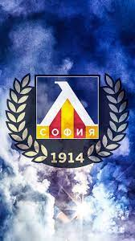

PFC Levski Sofia
Levski Sofia (Bulgarian: Левски София) is a Bulgarian professional association football club based in Sofia,
which competes in the First League, the top division of the Bulgarian football league system.
The club was founded on 24 May 1914 by
a group of high school students,
and is named after Vasil Levski, a Bulgarian revolutionary renowned as the national hero of the
country.
Learn More
Here are some nicknames of Levski Sofia
- The blues
- The Team of the People
- The Blue Avalanche
Players with most goals scored:
- Nasko Sirakov
- Pavel Panov
- Georgi Asparuhov
